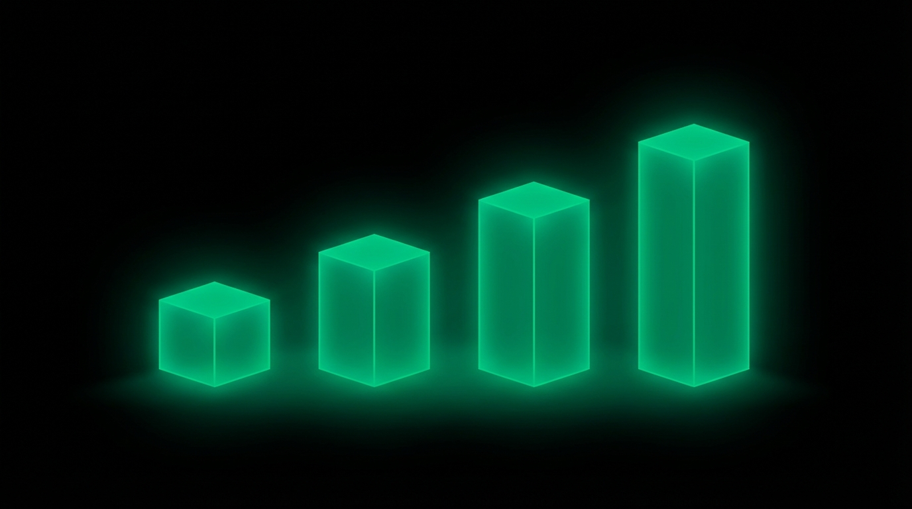

<!DOCTYPE html>
<html lang="en">
<head>
  <meta charset="UTF-8">
  <meta name="viewport" content="width=device-width, initial-scale=1.0">
  <title>The F.R.E.D. Method</title>
  <script src="https://cdn.tailwindcss.com"></script>
  <script src="https://unpkg.com/react@18/umd/react.production.min.js"></script>
  <script src="https://unpkg.com/react-dom@18/umd/react-dom.production.min.js"></script>
  <script src="https://unpkg.com/@babel/standalone/babel.min.js"></script>
  <script src="https://unpkg.com/framer-motion@10.16.4/dist/framer-motion.js"></script>
  <link href="https://fonts.googleapis.com/css2?family=Inter:wght@300;400;500;600;700;800&display=swap" rel="stylesheet">
  <script>
    tailwind.config = {
      theme: {
        extend: {
          colors: {
            accent: '#10b981',
            dark: '#0a0a0a',
          }
        }
      }
    }
  </script>
  <style>
    * { font-family: 'Inter', -apple-system, BlinkMacSystemFont, sans-serif; }
    body { background: #FFFFFF; color: #1a1a1a; }
    ::selection { background: #10b981; color: #fff; }
    h1, h2, h3, h4 { letter-spacing: -0.025em; }
    .lesson-container { max-width: 720px; margin: 0 auto; }
    .glow-accent { box-shadow: 0 0 60px rgba(16, 185, 129, 0.3); }
  </style>
</head>
<body>
  <div id="root"></div>

  <script type="text/babel">
    const { motion, useInView, AnimatePresence } = window.Motion;
    const { useState, useRef, useEffect } = React;

    const smoothEase = [0.25, 0.1, 0.25, 1];

    // SVG Icons
    const Icons = {
      brain: (
        <svg className="w-6 h-6" fill="none" stroke="currentColor" viewBox="0 0 24 24" strokeWidth="1.5">
          <path strokeLinecap="round" strokeLinejoin="round" d="M12 5a3 3 0 1 0-5.997.125 4 4 0 0 0-2.526 5.77 4 4 0 0 0 .556 6.588A4 4 0 1 0 12 18Z"/>
          <path strokeLinecap="round" strokeLinejoin="round" d="M12 5a3 3 0 1 1 5.997.125 4 4 0 0 1 2.526 5.77 4 4 0 0 1-.556 6.588A4 4 0 1 1 12 18Z"/>
          <path strokeLinecap="round" strokeLinejoin="round" d="M12 5v13"/>
        </svg>
      ),
      target: (
        <svg className="w-6 h-6" fill="none" stroke="currentColor" viewBox="0 0 24 24" strokeWidth="1.5">
          <circle cx="12" cy="12" r="10"/>
          <circle cx="12" cy="12" r="6"/>
          <circle cx="12" cy="12" r="2" fill="currentColor"/>
        </svg>
      ),
      shield: (
        <svg className="w-6 h-6" fill="none" stroke="currentColor" viewBox="0 0 24 24" strokeWidth="1.5">
          <path strokeLinecap="round" strokeLinejoin="round" d="M12 22s8-4 8-10V5l-8-3-8 3v7c0 6 8 10 8 10z"/>
        </svg>
      ),
      chart: (
        <svg className="w-6 h-6" fill="none" stroke="currentColor" viewBox="0 0 24 24" strokeWidth="1.5">
          <path strokeLinecap="round" strokeLinejoin="round" d="M3 3v18h18"/>
          <path strokeLinecap="round" strokeLinejoin="round" d="M18.7 8l-5.1 5.2-2.8-2.7L7 14.3"/>
        </svg>
      ),
      clock: (
        <svg className="w-6 h-6" fill="none" stroke="currentColor" viewBox="0 0 24 24" strokeWidth="1.5">
          <circle cx="12" cy="12" r="10"/>
          <path strokeLinecap="round" strokeLinejoin="round" d="M12 6v6l4 2"/>
        </svg>
      ),
      heart: (
        <svg className="w-6 h-6" fill="none" stroke="currentColor" viewBox="0 0 24 24" strokeWidth="1.5">
          <path strokeLinecap="round" strokeLinejoin="round" d="M21 8.25c0-2.485-2.099-4.5-4.688-4.5-1.935 0-3.597 1.126-4.312 2.733-.715-1.607-2.377-2.733-4.313-2.733C5.1 3.75 3 5.765 3 8.25c0 7.22 9 12 9 12s9-4.78 9-12z"/>
        </svg>
      ),
      spark: (
        <svg className="w-6 h-6" fill="none" stroke="currentColor" viewBox="0 0 24 24" strokeWidth="1.5">
          <path strokeLinecap="round" strokeLinejoin="round" d="M9.813 15.904L9 18.75l-.813-2.846a4.5 4.5 0 00-3.09-3.09L2.25 12l2.846-.813a4.5 4.5 0 003.09-3.09L9 5.25l.813 2.846a4.5 4.5 0 003.09 3.09L15.75 12l-2.846.813a4.5 4.5 0 00-3.09 3.09zM18.259 8.715L18 9.75l-.259-1.035a3.375 3.375 0 00-2.455-2.456L14.25 6l1.036-.259a3.375 3.375 0 002.455-2.456L18 2.25l.259 1.035a3.375 3.375 0 002.456 2.456L21.75 6l-1.035.259a3.375 3.375 0 00-2.456 2.456zM16.894 20.567L16.5 21.75l-.394-1.183a2.25 2.25 0 00-1.423-1.423L13.5 18.75l1.183-.394a2.25 2.25 0 001.423-1.423l.394-1.183.394 1.183a2.25 2.25 0 001.423 1.423l1.183.394-1.183.394a2.25 2.25 0 00-1.423 1.423z"/>
        </svg>
      ),
      check: (
        <svg className="w-5 h-5" fill="none" stroke="currentColor" viewBox="0 0 24 24" strokeWidth="2">
          <path strokeLinecap="round" strokeLinejoin="round" d="M4.5 12.75l6 6 9-13.5"/>
        </svg>
      ),
      chevronDown: (
        <svg className="w-5 h-5" fill="none" stroke="currentColor" viewBox="0 0 24 24" strokeWidth="2">
          <path strokeLinecap="round" strokeLinejoin="round" d="M19 9l-7 7-7-7"/>
        </svg>
      ),
      arrow: (
        <svg className="w-5 h-5" fill="none" stroke="currentColor" viewBox="0 0 24 24" strokeWidth="2">
          <path strokeLinecap="round" strokeLinejoin="round" d="M13.5 4.5L21 12m0 0l-7.5 7.5M21 12H3"/>
        </svg>
      )
    };

    // Animation Components
    function FadeUp({ children, delay = 0, className = "" }) {
      const ref = useRef(null);
      const isInView = useInView(ref, { once: true, margin: "-50px" });
      return (
        <motion.div ref={ref} className={className}
          initial={{ opacity: 0, y: 30 }}
          animate={isInView ? { opacity: 1, y: 0 } : {}}
          transition={{ duration: 0.6, delay, ease: smoothEase }}>
          {children}
        </motion.div>
      );
    }

    function ScaleIn({ children, delay = 0, className = "" }) {
      const ref = useRef(null);
      const isInView = useInView(ref, { once: true, margin: "-50px" });
      return (
        <motion.div ref={ref} className={className}
          initial={{ opacity: 0, scale: 0.9 }}
          animate={isInView ? { opacity: 1, scale: 1 } : {}}
          transition={{ duration: 0.5, delay, ease: smoothEase }}>
          {children}
        </motion.div>
      );
    }

    // Interactive FRED Explorer
    function FredExplorer() {
      const [activeTab, setActiveTab] = useState(0);

      const pillars = [
        {
          letter: "F",
          title: "Fears",
          color: "from-neutral-800 to-neutral-900",
          lightBg: "bg-white",
          textColor: "text-neutral-900",
          borderColor: "border-neutral-200",
          icon: Icons.shield,
          subtitle: "What keeps them awake at 3AM?",
          description: "Fear is the oldest and most powerful motivator in human psychology. It's primal, urgent, and demands immediate action. Your prospects carry fears about failure, loss, embarrassment, and being left behind. When you understand these fears deeply, you can position your solution as the safe path forward.",
          deepDive: "Fear operates on multiple levels. There's surface fear - losing money, wasting time, making mistakes. But beneath that lies deeper fears: being seen as incompetent, missing opportunities everyone else seizes, staying stuck while others advance. The best copy addresses both layers.",
          questions: [
            "What's the worst-case scenario they're desperately trying to avoid?",
            "What would they be embarrassed for others to know about their situation?",
            "What failure would devastate their self-image?",
            "What are they afraid of losing - status, money, relationships, opportunity?"
          ]
        },
        {
          letter: "R",
          title: "Results",
          color: "from-neutral-800 to-neutral-900",
          lightBg: "bg-white",
          textColor: "text-neutral-900",
          borderColor: "border-neutral-200",
          icon: Icons.chart,
          subtitle: "What specific outcomes are they chasing?",
          description: "Results are the tangible, measurable outcomes your audience wants to achieve. These are the concrete metrics of success they can point to and say 'I did it.' The more specific you can be about results, the more believable and compelling your promise becomes.",
          deepDive: "Generic results don't sell. '10,000 new subscribers in 90 days' outsells 'grow your audience.' '$47,000 in my first month' outsells 'increase your income.' Specificity creates believability. When you know the exact results your audience craves, you can promise them with precision.",
          questions: [
            "What numbers would make them feel successful - revenue, followers, conversions?",
            "What milestone would they screenshot and share with friends?",
            "What metrics are they obsessively tracking right now?",
            "What achievement would prove to themselves they've 'made it'?"
          ]
        },
        {
          letter: "E",
          title: "Expectations",
          color: "from-neutral-800 to-neutral-900",
          lightBg: "bg-white",
          textColor: "text-neutral-900",
          borderColor: "border-neutral-200",
          icon: Icons.clock,
          subtitle: "What do they believe is possible?",
          description: "Expectations are the mental models your audience carries about what success requires and whether they can achieve it. These beliefs - often limiting - shape what they're willing to try and what they dismiss as impossible or 'not for people like me.'",
          deepDive: "Your prospect has already tried things that failed. They've been disappointed before. They have beliefs about what success requires: 'You need money to make money,' 'It takes years,' 'You need connections.' Your job is to reset these expectations while remaining credible.",
          questions: [
            "What have they already tried that didn't work for them?",
            "What do they believe success requires - time, talent, luck, money?",
            "What objections and skepticism do they carry from past failures?",
            "What's their realistic timeline for achieving results?"
          ]
        },
        {
          letter: "D",
          title: "Desires",
          color: "from-neutral-800 to-neutral-900",
          lightBg: "bg-white",
          textColor: "text-neutral-900",
          borderColor: "border-neutral-200",
          icon: Icons.heart,
          subtitle: "What do they secretly want?",
          description: "Desires are the deeper, often unspoken wants that drive behavior at the emotional level. These go beyond surface-level results into identity, status, and emotional fulfillment. People rarely admit these desires out loud, but they're the real fuel behind every purchase.",
          deepDive: "Nobody admits they want to feel superior to their neighbors or prove their parents wrong. But these desires drive behavior. The person buying a fitness program isn't just buying weight loss - they're buying confidence, attractiveness, and the identity of someone who has their life together.",
          questions: [
            "What would they never publicly admit to wanting?",
            "What status or identity do they secretly crave?",
            "What transformation would make them feel truly fulfilled?",
            "What dream outcome feels almost too good to hope for?"
          ]
        }
      ];

      const current = pillars[activeTab];

      return (
        <div className="space-y-6">
          {/* Tab Buttons */}
          <div className="flex gap-2">
            {pillars.map((p, i) => (
              <motion.button
                key={i}
                onClick={() => setActiveTab(i)}
                className={`flex-1 py-4 rounded-xl font-bold text-2xl transition-all ${
                  activeTab === i
                    ? `bg-gradient-to-br ${p.color} text-white shadow-lg`
                    : 'bg-neutral-100 text-neutral-400 hover:bg-neutral-200'
                }`}
                whileHover={{ scale: 1.02 }}
                whileTap={{ scale: 0.98 }}
              >
                {p.letter}
              </motion.button>
            ))}
          </div>

          {/* Active Tab Content */}
          <AnimatePresence mode="wait">
            <motion.div
              key={activeTab}
              initial={{ opacity: 0, y: 20 }}
              animate={{ opacity: 1, y: 0 }}
              exit={{ opacity: 0, y: -20 }}
              transition={{ duration: 0.3 }}
              className={`${current.lightBg} rounded-2xl p-8 border ${current.borderColor}`}
            >
              <div className="flex items-center gap-4 mb-6">
                <div className={`w-14 h-14 bg-gradient-to-br ${current.color} rounded-2xl flex items-center justify-center text-white shadow-lg`}>
                  {current.icon}
                </div>
                <div>
                  <h3 className={`text-2xl font-bold ${current.textColor}`}>{current.title}</h3>
                  <p className="text-neutral-500">{current.subtitle}</p>
                </div>
              </div>

              <p className="text-neutral-700 leading-relaxed mb-4">{current.description}</p>
              <p className="text-neutral-600 leading-relaxed mb-6">{current.deepDive}</p>

              <div className="bg-white rounded-xl p-5 border border-neutral-200">
                <p className="text-xs font-semibold text-neutral-500 uppercase tracking-wider mb-4">Questions to Uncover This Pillar</p>
                <ul className="space-y-3">
                  {current.questions.map((q, i) => (
                    <li key={i} className="flex items-start gap-3">
                      <div className={`mt-0.5 ${current.textColor}`}>{Icons.check}</div>
                      <span className="text-neutral-700">{q}</span>
                    </li>
                  ))}
                </ul>
              </div>
            </motion.div>
          </AnimatePresence>
        </div>
      );
    }

    // Implementation Steps
    function ImplementationSteps() {
      const steps = [
        {
          num: "01",
          title: "Research Deep, Not Wide",
          desc: "Talk to 5-10 customers in depth rather than surveying 100 superficially. Read Amazon reviews, support tickets, Reddit threads, and forum posts obsessively. Capture their exact words - that's the language you'll use in your copy."
        },
        {
          num: "02",
          title: "Map Every Insight to F.R.E.D.",
          desc: "Create four columns as you research. Categorize every meaningful statement into Fears, Results, Expectations, or Desires. Patterns will emerge quickly. The most common themes become your headline, subhead, and bullet points."
        },
        {
          num: "03",
          title: "Address All Four in Your Copy",
          desc: "Great copy touches all four psychological forces. Acknowledge fears to build trust, promise results for motivation, reset expectations for believability, and speak to desires for emotional resonance. Missing one creates a leak in your persuasion."
        },
        {
          num: "04",
          title: "Lead with the Dominant Force",
          desc: "Which of the four is strongest for your audience right now? Lead with that. Fear-dominant audiences need safety first. Result-focused audiences want specific numbers. Desire-driven audiences respond to transformation stories."
        }
      ];

      return (
        <div className="space-y-4">
          {steps.map((step, i) => (
            <motion.div
              key={i}
              initial={{ opacity: 0, x: -20 }}
              whileInView={{ opacity: 1, x: 0 }}
              viewport={{ once: true }}
              transition={{ delay: i * 0.1 }}
              className="flex gap-5 p-5 bg-neutral-900 rounded-xl border border-neutral-800"
            >
              <div className="text-3xl font-bold text-accent/50">{step.num}</div>
              <div>
                <h3 className="font-semibold text-white mb-2">{step.title}</h3>
                <p className="text-sm text-neutral-400 leading-relaxed">{step.desc}</p>
              </div>
            </motion.div>
          ))}
        </div>
      );
    }

    function Lesson() {
      return (
        <div className="min-h-screen bg-white">
          {/* Hero - Dark */}
          <header className="bg-dark text-white px-6 py-16 relative overflow-hidden">
            <div className="absolute inset-0 bg-gradient-to-br from-accent/20 via-transparent to-transparent" />
            <div className="lesson-container relative">
              <FadeUp>
                <span className="inline-flex items-center gap-2 px-4 py-2 bg-white/10 backdrop-blur-sm text-white/90 text-xs font-semibold rounded-full mb-6 border border-white/10">
                  {Icons.brain}
                  PSYCHOLOGY FRAMEWORK
                </span>
                <h1 className="text-4xl md:text-5xl font-extrabold mb-4 leading-tight">
                  The F.R.E.D. Method
                </h1>
                <p className="text-xl text-neutral-400 max-w-lg">
                  The mind-reading framework that reveals exactly what your audience wants before they even know it themselves.
                </p>
              </FadeUp>

              {/* Lesson Illustration */}
              <FadeUp>
                <div className="my-8">
                  
                </div>
              </FadeUp>
            </div>
          </header>

          {/* Section 1 - White: Introduction */}
          <section className="px-6 py-16 bg-white">
            <div className="lesson-container space-y-8">
              <FadeUp>
                <p className="text-lg text-neutral-700 leading-relaxed">
                  Master copywriters don't guess what their audience wants. They have a systematic approach for decoding the hidden motivations that drive every decision, every click, every purchase. That system has a name: <strong>F.R.E.D.</strong>
                </p>
                <p className="text-lg text-neutral-700 leading-relaxed">
                  <strong>F</strong>ears. <strong>R</strong>esults. <strong>E</strong>xpectations. <strong>D</strong>esires. These four psychological forces shape human behavior at the deepest level. They operate beneath conscious awareness, silently directing attention, creating urgency, and ultimately deciding whether someone clicks "Buy Now" or bounces forever.
                </p>
                <p className="text-lg text-neutral-600 leading-relaxed">
                  When you understand all four pillars deeply, your copy stops feeling like marketing. It feels like mind reading. Prospects think: "It's like they're inside my head." That's not magic. That's F.R.E.D.
                </p>
              </FadeUp>
            </div>
          </section>

          {/* Section 2 - Dark: What is FRED */}
          <section className="px-6 py-16 bg-dark text-white">
            <div className="lesson-container space-y-8">
              <FadeUp>
                <div className="flex items-center gap-3 mb-2">
                  <div className="w-10 h-10 bg-accent/20 rounded-xl flex items-center justify-center text-accent">
                    {Icons.target}
                  </div>
                  <h2 className="text-3xl font-bold">Why F.R.E.D. Works</h2>
                </div>
                <p className="text-neutral-300 leading-relaxed">
                  Every customer has an internal conversation running in their head. A constant stream of worries, hopes, doubts, and dreams. F.R.E.D. gives you a framework for tuning into that conversation systematically. Instead of guessing what might resonate, you map the four core psychological drivers that influence all human decisions.
                </p>
                <p className="text-neutral-400 leading-relaxed">
                  When your copy addresses all four pillars, it creates complete persuasion. Fear creates urgency. Results provide motivation. Expectations build believability. Desires trigger emotional connection. Miss any one pillar, and you leave money on the table.
                </p>
              </FadeUp>

              <FadeUp delay={0.1}>
                <div className="grid grid-cols-4 gap-4">
                  {[
                    { letter: "F", label: "Fears", color: "border-red-500/40" },
                    { letter: "R", label: "Results", color: "border-emerald-500/40" },
                    { letter: "E", label: "Expectations", color: "border-blue-500/40" },
                    { letter: "D", label: "Desires", color: "border-amber-500/40" }
                  ].map((item, i) => (
                    <motion.div
                      key={i}
                      initial={{ opacity: 0, y: 20 }}
                      whileInView={{ opacity: 1, y: 0 }}
                      viewport={{ once: true }}
                      transition={{ delay: i * 0.1 }}
                      className={`bg-white/5 backdrop-blur rounded-xl p-5 border ${item.color} text-center`}
                    >
                      <div className="text-4xl font-bold text-white mb-1">{item.letter}</div>
                      <div className="text-sm text-neutral-400">{item.label}</div>
                    </motion.div>
                  ))}
                </div>
              </FadeUp>
            </div>
          </section>

          {/* Section 3 - White: Interactive Explorer */}
          <section className="px-6 py-16 bg-white">
            <div className="lesson-container space-y-8">
              <FadeUp>
                <h2 className="text-3xl font-bold text-neutral-900 mb-2">The Four Psychological Pillars</h2>
                <p className="text-neutral-600">
                  Click each letter to explore the psychology behind it and discover the questions that unlock deep customer insight.
                </p>
              </FadeUp>

              <FadeUp delay={0.1}>
                <FredExplorer />
              </FadeUp>
            </div>
          </section>

          {/* Section 4 - Dark: Implementation */}
          <section className="px-6 py-16 bg-dark text-white">
            <div className="lesson-container space-y-8">
              <FadeUp>
                <h2 className="text-3xl font-bold mb-2">Apply F.R.E.D. to Your Copy</h2>
                <p className="text-neutral-400 max-w-2xl">
                  Knowing F.R.E.D. is one thing. Implementing it systematically is where the magic happens. Follow this four-step process to turn customer psychology into converting copy.
                </p>
              </FadeUp>

              <FadeUp delay={0.1}>
                <ImplementationSteps />
              </FadeUp>
            </div>
          </section>

          {/* Section 5 - White: Holy Shit Moment */}
          <section className="px-6 py-16 bg-white">
            <div className="lesson-container">
              <FadeUp>
                <div className="bg-gradient-to-br from-accent to-emerald-600 rounded-3xl p-8 md:p-12 text-white glow-accent">
                  <div className="flex items-center gap-3 mb-6">
                    <div className="w-12 h-12 bg-white/20 rounded-xl flex items-center justify-center">
                      {Icons.spark}
                    </div>
                    <span className="text-sm font-semibold uppercase tracking-wider text-white/80">Key Insight</span>
                  </div>
                  <p className="text-2xl md:text-3xl font-bold leading-tight mb-6">
                    The best copy doesn't feel like marketing. It feels like the customer wrote it themselves.
                  </p>
                  <p className="text-white/80 text-lg leading-relaxed">
                    When you truly understand someone's Fears, Results, Expectations, and Desires, your words mirror their internal dialogue perfectly. They see themselves in every sentence. That's not persuasion anymore. That's connection. And connection converts.
                  </p>
                </div>
              </FadeUp>
            </div>
          </section>

          {/* Section 6 - Dark: Key Takeaways */}
          <section className="px-6 py-16 bg-dark text-white">
            <div className="lesson-container">
              <FadeUp>
                <h2 className="text-sm uppercase tracking-widest text-neutral-500 mb-8">Key Takeaways</h2>
                <div className="space-y-3">
                  {[
                    "F.R.E.D. stands for Fears, Results, Expectations, and Desires",
                    "Fear is the most powerful motivator - understand what they're avoiding",
                    "Results must be specific and measurable to be believable",
                    "Reset expectations by acknowledging past failures first",
                    "Desires go deeper than surface wants - tap into identity and status",
                    "Address all four pillars in every piece of copy you write"
                  ].map((takeaway, i) => (
                    <motion.div
                      key={i}
                      initial={{ opacity: 0, x: -20 }}
                      whileInView={{ opacity: 1, x: 0 }}
                      viewport={{ once: true }}
                      transition={{ delay: i * 0.05 }}
                      className="flex items-start gap-3 p-4 bg-neutral-900 rounded-xl border border-neutral-800"
                    >
                      <div className="text-accent mt-0.5">{Icons.check}</div>
                      <span className="text-neutral-200">{takeaway}</span>
                    </motion.div>
                  ))}
                </div>
              </FadeUp>
            </div>
          </section>

          {/* Footer */}
          <footer className="px-6 py-8 border-t border-neutral-100 bg-white">
            <div className="lesson-container flex justify-between items-center text-sm text-neutral-400">
              <span>Quantum Scale</span>
              <span>Psychology Framework</span>
            </div>
          </footer>
        </div>
      );
    }

    ReactDOM.render(<Lesson />, document.getElementById('root'));
  </script>
</body>
</html>
